Learning Objectives
After completing this lesson, you’ll be able to:
- Understand the different options to define a geographic area of interest.
- Create a Geometry published parameter.
- Implement the Geometry published parameter in a self-serve data download workflow.
- Use a Geometry published parameter as an end-user on FME Flow.
Resources
- Starting workspace | C:\FMEData\Workspaces\DeployWorkflowsWithFMEFlow\get-geometry-input-from-users.fmw
- Complete workspace | C:\FMEData\Workspaces\DeployWorkflowsWithFMEFlow\get-geometry-input-from-users--complete.fmw
- Addresses.gbd.zip | C:\FMEData\Data\Addresses\Addresses.gdb
Geographic Area of Interest
Some self-serve spatial workflows benefit from letting the user choose to download data within a geographic area of interest. There are three ways of doing so with FME:
- A simple, rectangular bounding box restricts the reader to only reading features within the specified box.
- You can use an existing boundary to read data within any area feature, either using the reader SQL WHERE clause or providing a boundary dataset.
- An ad hoc boundary is where FME derives it from an area that the user draws as input.

Generally, the bounding box option is tedious and the most restrictive. The user must manually enter four bounding coordinates.
The ad hoc or existing boundaries are more versatile and user-friendly.
For more information on setting up each type of geometry input with parameters, see Integrate Data with the FME Platform.
Geometry Parameter Interactive Web Map
You create the ad hoc boundary option using a Geometry user parameter, which you link to create a feature in the workspace. This parameter lets you draw a point or an area of interest to input into a workspace on FME Flow.
When configuring a workspace to run on FME Flow containing a Geometry published parameter, the user accesses a web map from the Run Workspace page to create the geometry feature - a point, line, polygon, or rectangle. When you draw a polygon, close the shape by clicking the starting point.
You can access the web map in-line under Published Parameters...

... or as a pop-up web map.

You may collapse the pop-up map by clicking  and expand the menu in the inline map
and expand the menu in the inline map for the option to pop it out into its own window.
for the option to pop it out into its own window.
For more information on the Geometry Parameter and setting custom basemaps for the web map in FME Flow, please see Using the Geometry Parameter.
Exercise

Jennifer continues to update workspaces to use parameters to allow end-users greater control over how the workspace operates. This time, she is responsible for managing a workflow for mailing construction alerts to residents who might be affected by noise from City construction work. Normally, someone would have to generate the list of affected residents manually. However, Jennifer wants to let the construction teams create the list, saving valuable time.
So far, Jennifer has a workspace that generates the list of affected residents and allows users to choose the format for their data download. Now, she needs to add a Geometry published parameter to let users interactively choose their area of interest.
1) Open Workspace
Jennifer opens the starting workspace (C:\FMEData\Workspaces\DeployWorkflowsWithFMEFlow\get-geometry-input-from-users.fmw) in FME Workbench.
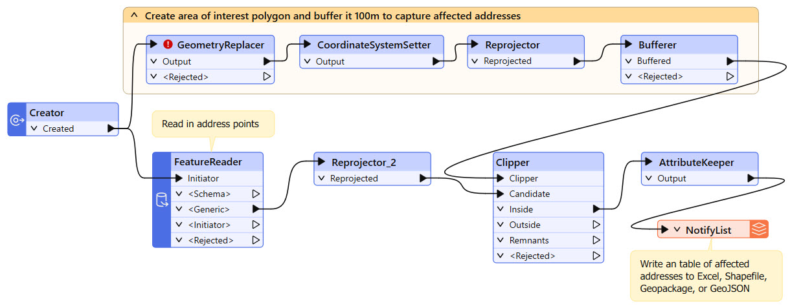
The workspace reads in Addresses, clips them to a buffered geometry input, and writes the clipped Address data in the user's choice format. The GeometryReplacer transformer is incomplete; it's missing input geometry, which Jennifer will remedy once she creates the Geometry parameter.
2) Open User Parameters
The workspace already has a published parameter that lets users choose the output format of the clipped Addresses. Jennifer right-clicks User Parameters in the Navigator and selects Manage User Parameters...
The Output Format parameter limits the format options to specific formats. It appears to the user as a drop-down selection, and the default format is Microsoft Excel.
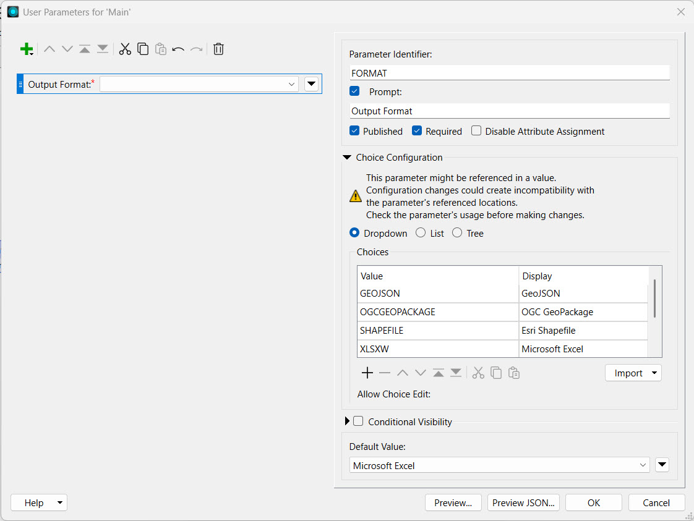
3) Create a Geometry Parameter
Jennifer clicks the green + icon in the top-left to add a Geometry user parameter to take a construction area as input from the user. Jennifer selects Geometry and configures it with the following options:
| Type |
Geometry |
| Parameter Identifier |
GEOM_COORDS |
| Prompt |
Select Construction Area: |
| Published |
Checked |
| Required |
Checked |
| Disable Attribute Assignment |
Checked |
| Conditional Visibility |
Unchecked |
For Geometry Configuration, Jennifer sets the following:
| Geometry Encoding |
GeoJSON |
| Geometry Types |
Polygon, Box, Line |
| Specify initial bounds for map display |
Checked |
| Top (-90..90) |
49.2548 |
| Left (-180..180) |
-123.244 |
| Bottom (-90..90) |
49.3034 |
| Right (-180..180) |
-123.071 |
The initial bounds will be the area shown in FME Flow when the user opens the Geometry parameter map. Larger bounds will have the map zoomed out, and smaller bounds will have the map zoomed in. Jennifer's Geometry Parameter configuration looks like this:
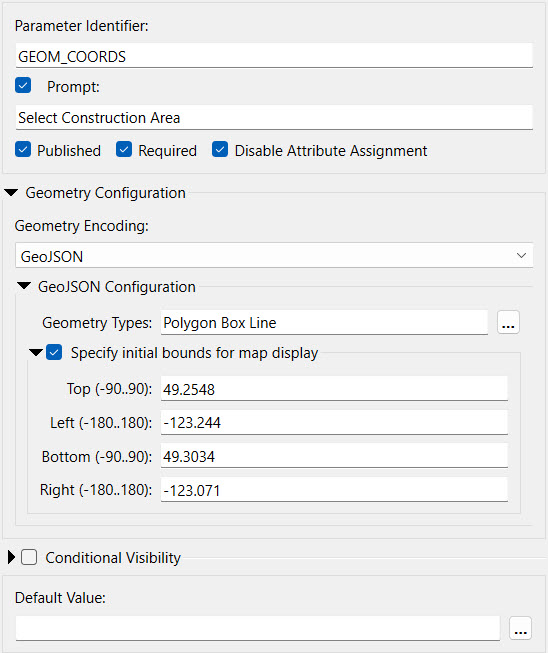
Jennifer reorders the parameter so the Geometry one appears at the top of the list and clicks OK to close the Parameter Manager.
4) Link the Geometry Parameter
Now that Jennifer has set up the geometry published parameter, she needs to link it within the workflow.
Jennifer opens the parameters for the GeometryReplacer. She ensures the Geometry Encoding is GeoJSON and then sets the Geometry Source to the GEOM_COORDS parameter.
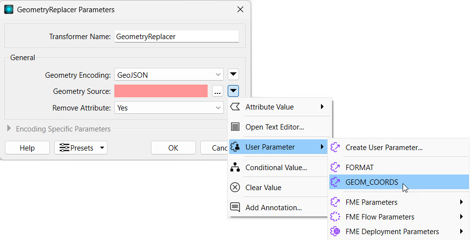
The GeometryReplacer uses the user parameter input to ensure the user's desired geometry clips the Addresses. Jennifer clicks OK to close the GeometryReplacer Parameters.
5) Test Writing Results to Shapefile
Now, Jennifer will test her workspace results before deploying it on FME Flow. She clicks Run to run the workspace. In the translation parameters prompt, Jennifer selects Esri Shapefile as the output format.
For the Geometry parameter, Jennifer has to supply GeoJSON to test on FME Workbench. FME Flow has the advantage of using the interactive web map. For now, Jennifer pastes the following GeoJSON code to test the parameter:
{"type":"Polygon","coordinates":[[[-123.131762,49.282752],[-123.132148,49.282465],[-123.131579,49.282087],[-123.131139,49.282332],[-123.131762,49.282752]]]}
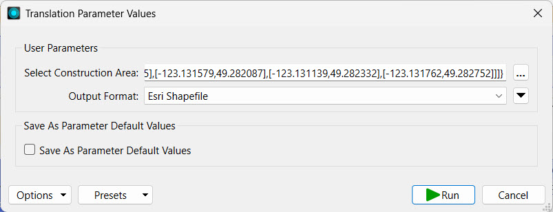
Jennifer clicks Run and waits for the translation to finish. Then she clicks the NotifyList writer feature type and clicks View Written Data.
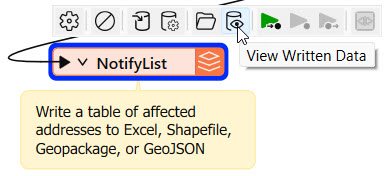
Jennifer adds NotifyList.shp to the end of the Dataset parameter path and clicks OK.
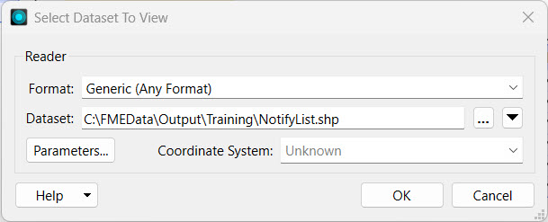
The addresses to notify, those within 100m of the area of interest Jennifer input, appear in the Visual Preview window.
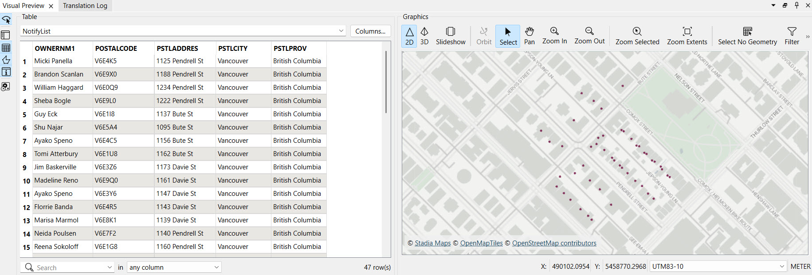
6) Publish to FME Flow
With the workspace complete, Jennifer can now publish to FME Flow. Jennifer publishes the workspace to the Training repository and sets Data Download and Job Submitter as the services.
Expand for Steps on Publishing to FME Flow
The publishing wizard sets all configurations for publishing workspaces to FME Flow. To open it, click Publish in the top toolbar.
The first steps are to confirm your FME Flow connection, select a Repository to house the workspace, and optionally alter the workspace's name. To create a new Repository, click New and enter its details.
Optionally, you may Upload data files to publish the workspace's source data files to FME Flow along with the workspace. You can control which files from the Select Files... option.
Next, if your workspace has any connections, you may select whether or not they will also be published to FME Flow.
The last step of publishing is to register services for the workspace to use on FME Flow.
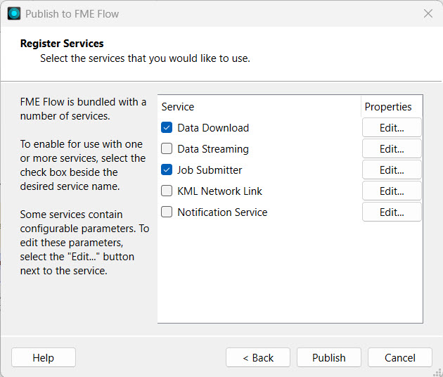
After publishing, the translation log generates a report on the publishing and provides a direct link to run the workspace on FME Flow.
7) Run Workspace on FME Flow
Jennifer opens the Run Workspace page on FME Flow and selects the workspace she just published. She sets the service to Data Download. The result will contain the list of addresses to notify about construction in the format of the user's choosing.
Under Published Parameters, Jennifer clicks the map icon for the Select Construction Area parameter.

The Geometry parameter web map appears. It shows the area specified in the parameter settings on FME Workbench and offers options along the top to select which geometry type Jennifer wishes to input.
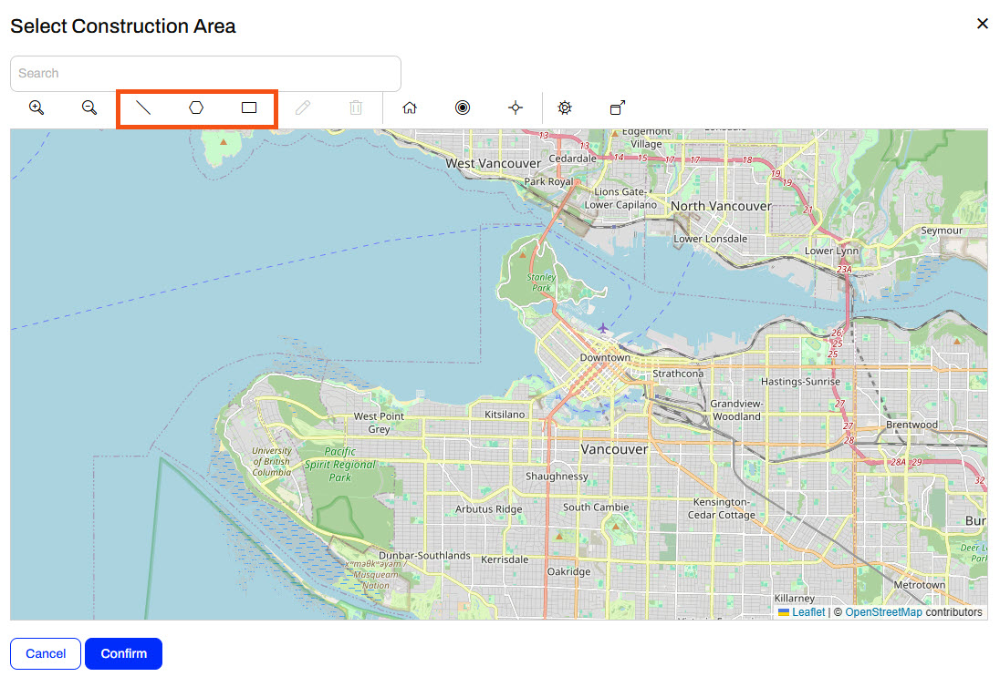
Jennifer zooms into downtown Vancouver, uses the polygon tool to pick an area, and clicks Confirm to close the map.
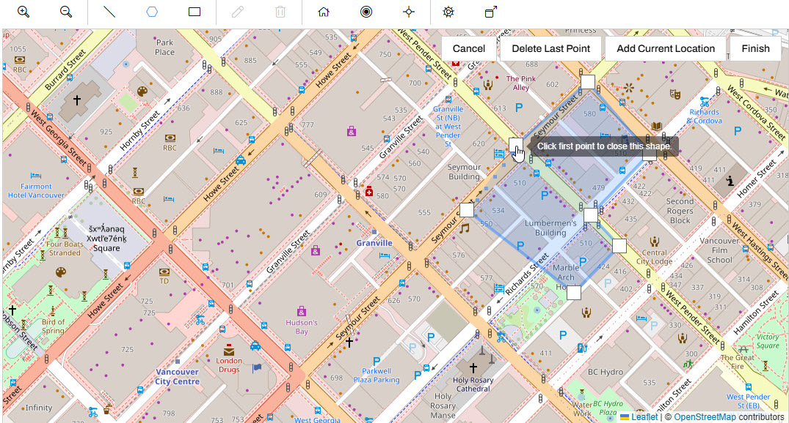
Jennifer confirms that GeoJSON coordinates are now present in the Select Construction Area parameter and leaves Microsoft Excel as the output format by default.
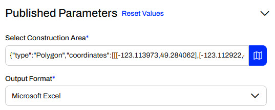
Jennifer clicks Run to run the workspace and waits for the Data Download URL.
8) Inspect Results
Once the workspace finishes running, Jennifer clicks on the Data Download URL to download the data.
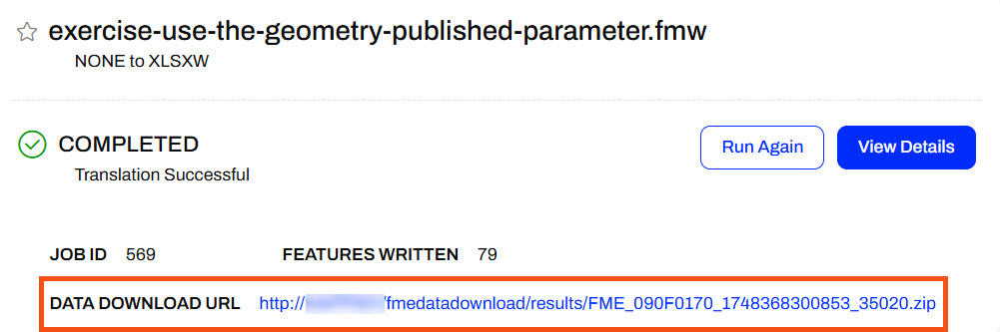
Optionally, Jennifer extracts and opens the data in FME Data Inspector. She can use this list to send letters to the residents affected by the construction.
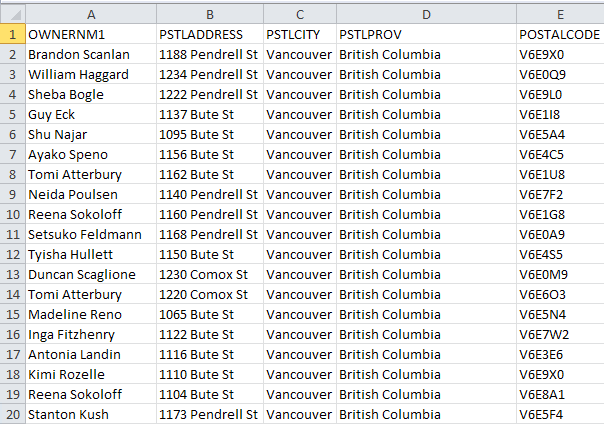